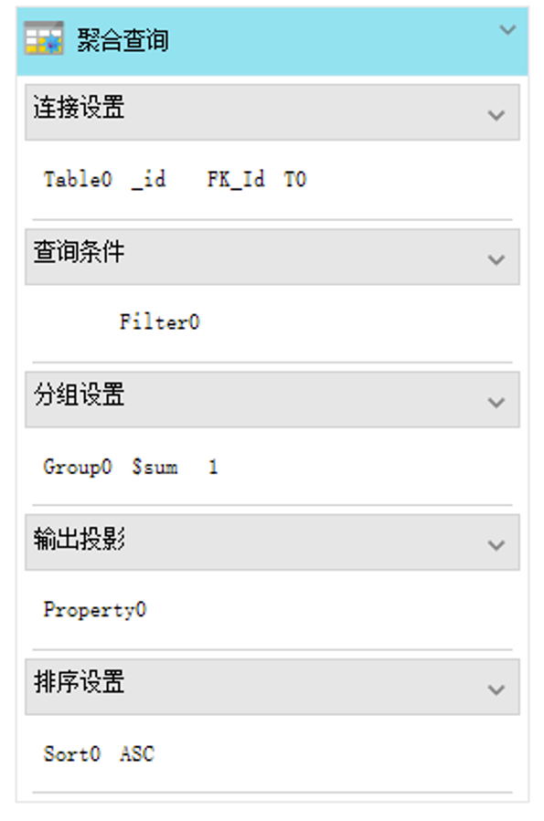
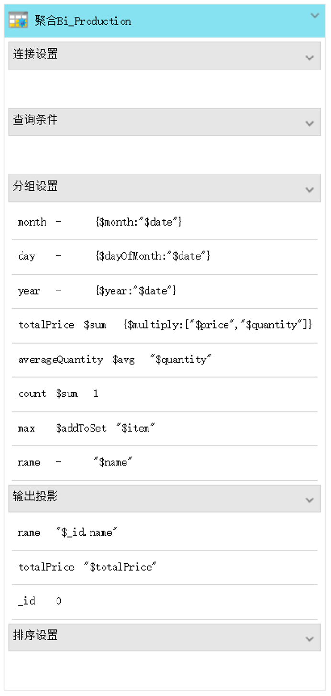
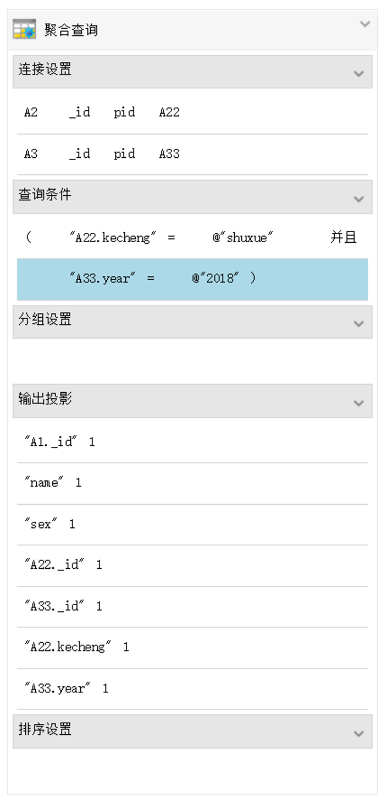

聚合查询AggregateCmd
作用:聚合主要用于处理数据(诸如统计平均值,求和等)，并返回计算后的数据结果。

设计属性
1、基础设置：
活动标题
类型：字符串；
值：默认值：聚合查询；
说明：
活动注释
类型：字符串；
值：
说明：对活动的说明；
表名称
类型：字符串；
说明：查询数据库中表的名称（必填）；
输出名称
类型：字符串；
值：示例：persons；
说明：查询操作执行后返回的结果名称；
输出类型
类型：（下拉选框）；
值：默认值：集合对象；
说明：设置返回结果类型；可选值：集合对象、单值对象、游标对象，设置输出变量的类型。注：聚合查询不能设置输出‘单值对象’！输出的‘游标对象’没有skip、limit等方法；
输出行数
类型：整数；
默认值：-1；
说明：数值，控制返回结果的行数。负数和0代表输出所有；小数只取整数部分；
忽略行数
类型：整数；
默认值：-1；
说明：数值，控制忽略的数据行数，可以是代表整数值的变量。负数和0表示忽略0行，从第一行数据输出；
添加连接
类型：（按钮）；
说明：在”连接设置“里添加“连接“；
添加筛选
类型：（按钮）；
说明：在”查询条件“里添加“筛选“；
添加分组
类型：（按钮）；
说明：在”分组设置“里添加“分组“；
添加映射
类型：（按钮）；
说明：在”输出投影“里添加“映射“；
添加排序
类型：（按钮）；
说明：在”排序设置“里添加“排序“；
2、设置查询连接：
表名称
类型：字符串；
说明：同一个数据库下需要联合查询的从表名；
主键
类型：字符串；
说明：源表中需要进行连接查询的字段名；
外键
类型：字符串；
说明：从表中需要进行连接查询的字段名；
别名
类型：字符串；
说明：默认值T0，输出数据中形成新的数组的名称；
设置为主表的子属性（数组）
类型：（单选框）；
说明：默认选中，选中时，输出表中的“别名”字段值类型为单个对象；取消选中时，输出表中的“别名”字段值类型为数组。
添加连接
类型：（按钮）；
说明：
删除连接
类型：（按钮）；
说明：
3、查询条件（筛选）设置
组合开始
类型：（单选框）；
说明：是否设置为组合开始；
项目名称
类型：字符串；
值：默认值：Filer0…，示例：“T0.count”；
说明：比较的字段名。比较主表字段直接填写主表字段名，比较从表字段，按照格式填写：“查询连接设置的别名.从表字段名”。
比较方式
类型：（下拉选框）；
值：默认：无；
说明：可选值：无、等于、大于、大于等于、小于、小于等于、不等于、开头于、包含、结尾于、在……里
匹配值
类型：
说明：比较的值，可以为变量名，也可以为常量；常量默认为字符串类型，想要数值类型前面需加@；
组合结束
类型：（单选框）；
说明：是否设置为组合结束；
连接方式
类型：（下拉选框）；
值：默认：无；
说明：可选值：并且、或者、无；
参数注释
类型：字符串；
说明：对当前表达式注释；
添加筛选
类型：（按钮）；
说明：添加一个查询条件；
删除筛选
类型：（按钮）；
说明：删除选中的查询条件；
4、设置分组规则
分组名称
类型：字符串；
说明：设置分组名称；
聚合命令
类型：（下拉选框）；
值：可选值：未设置、求和、平均值、最大值、最小值、第一项值、最后项值、生成数组、生成集合
说明：未设置：设置分组项；其余的选项都是在为分组做相应的运算操作；
表达式
类型：字符串；
示例：
1、{ $multiply: [ "$price", "$quantity" ] }
2、"$quantity"
3、1
说明：填写聚合查询的管道操作运算符，配合上面的聚合命令使用；
添加分组
类型：（按钮）；
说明：添加一个分组；
删除分组
类型：（按钮）；
说明：删除选中分组；
5、映射（投影）-设置输出显示（或隐藏）字段：
输出项名
类型：字符串；
值：示例：_id；
说明：映射主表中字段，直接写主表中字段名，_id默认显示；映射从表中字段，可以自定义字段名。；
表达式
类型：字符串；
值：示例1：1；示例2：“$T0.count”
说明：“数据项名”为主表字段时，除了_id可以填写0或1，其余字段只能填写1，0-不输出，1-输出；“数据项名”代表从表字段时，此处填写：“$查询连接设置的别名.从表字段名”。还可以填写带运算符的表达式。
项目别名
类型：字符串；
值：
说明：为输出映射表字段起个别名；
参数注释
类型：字符串；
说明：
添加映射
类型：（按钮）；
说明：添加一个映射（或投影）;
删除映射
类型：（按钮）；
说明：删除一个映射（或投影）;
备注：表达式运算符及使用方法：
数学运算符：乘法：$multiply；除法：$divide；加法：$add；减法：$subtract；绝对值：$abs；取余：$mod；平方：$pow；开平方：$sqrt；向上取整：$ceil；向下取整：$floor；取整位数：$trunc；日期转字符串：$dateToString；取年份：$year；取月份：$month；取日期：$dayOfMonth；
应用示例(映射表达式填写示例)：$multiply: {$multiply:[“$numA”,”$numB”]}; {$multiply:[“$numA”,30,……]}$divide: {$divide:[“$numA”,”$numB”]}; {$divide:[“$numA”,30]}$add:{$add:[“$numA”,”$numB”]}; {$add:[“$numA”,30,……]}$subtract:{$subtract:[“$numA”,”$numB”]}; {$subtract:[“$numA”,30]}$abs: {$abs: { $subtract: [ "$start", "$end" ] }}$mod: {$mod: [ "$hours", "$tasks" ] }$pow: {$pow: [ 5, 2 ] } 运算结果：25$sqrt: {$sqrt:25 } 运算结果：5$ceil：{$ceil :7.1} 运算结果：8$floor：{$floor:7.9} 运算结果：7$trunc：{$trunc:7.9} 运算结果：7$dateToString: {$dateToString :{date:”$proDate”,format:”%Y-%m-%d”}} 返回：2008-08-08$year：{$year:”$date”}$month：{$month:”$date”}$dayOfMonth：{$dayOfMonth:”$date”}
6、排序设置：
排序属性
类型：字符串；
值：
说明：
排序方式
类型：（下拉选框）；
值：默认值:升序
说明：可选值：升序、降序；
添加排序
类型：（按钮）；
说明：添加一个排序设置；
删除排序
类型：（按钮）；
说明：删除选中的排序设置；
示例1：数学运算符的使用

示例2：多表查询使用示例
